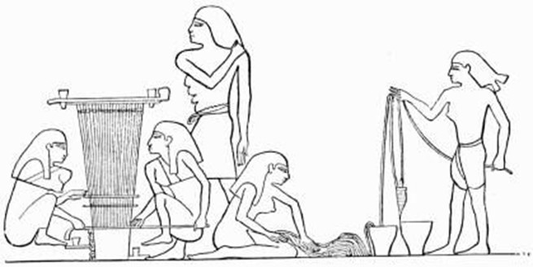

Hình ảnh bên trái cho thấy quá trình trồng cây lanh. Sau khi thu hoạch, hạt lanh được ngâm trong nước cho mềm. Sau đó, sợi lanh đã được làm mềm được tách thành các sợi được đánh tơi trước khi kéo thành sợi rồi dệt thành vải.
cần có thợ thủ công để may quần áo, đồ trang sức và tóc giả. Ai Cập đã có những hội thảo với công nghệ tuyệt vời. Cần phải đào tạo và có rất nhiều kỹ năng để tạo ra những thứ đẹp đẽ này. Những người thợ thủ công dưới đây đang làm việc trong một cửa hàng nơi họ sản xuất các loại hạt và đồ trang sức sử dụng hạt.
